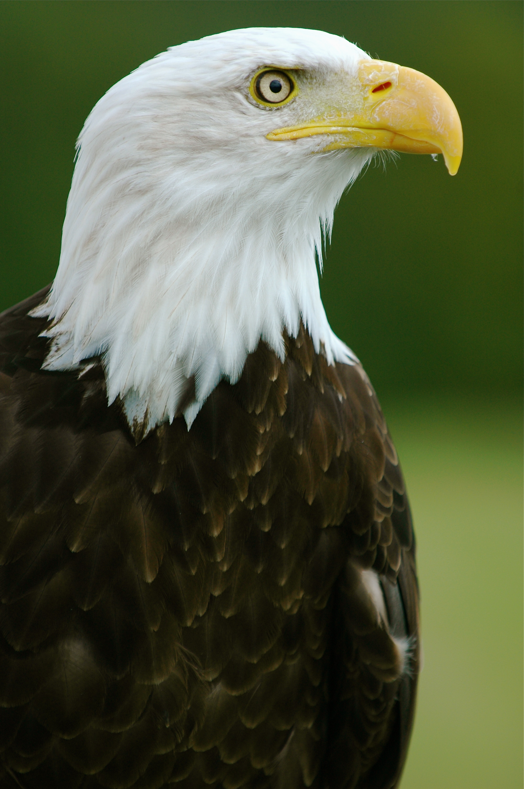
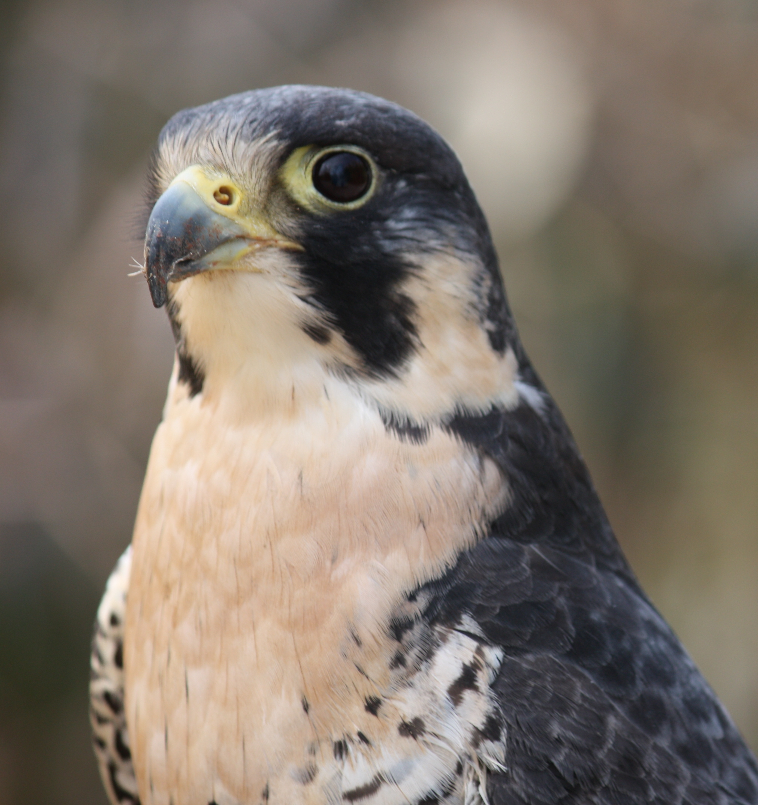

-

Bald Eagle
Scientific Name:
Haliaeetus leucocephalus
Wingspan:
180 - 230 cm
Mass:
3 - 6.3 kg
Speed:
120 - 160 km/h (diving)
56 - 70 km/h (gliding)
In 1782 the bald eagle was made the national symbol of the fledgling United States over the objections of Ben Franklin, who favored the wild turkey. The eagle, according to Franklin, was a "sharper," a robber, and "frequently lousy." It may well be that even by that early date the bald eagle was showing unpleasant symptoms of living in proximity to people, because studies of the big bird done in relatively undisturbed areas of Alaska show that the bald eagle is in fact a bold and versatile predator. In Alaska bald eagles will take prey ranging from sea otter pups and sea-birds to spawning salmon. They also consume carrion, which is an important food source for young birds. Usual food for Eastern eagles is fish and carrion.
The bald eagle provides a fitting symbol for the United States for a number of reasons. One is that balds are truly magnificent birds, standing 3 feet tall and with a wingspan that may reach 7 feet. Weight ranges from 8 pounds for the smaller males to 15 pounds for large females. Adult eagles sport a white head that gleams when the bird is in flight; this is balanced by a white tail. The white areas are offset by a dark brown body. Immature birds lack the identifying white head and tail, and are sometimes mistaken for golden eagles. Immatures are brown with varying amounts of white on the wings and body. Their mottled plumage is shed in a series of yearly molts, until adult resplendence is reached at the age of 5, 6, or 7. Another reason the bald eagle is an appropriate national symbol is that the bird has an extensive geographic range in North America, extending from California and Florida up into Alaska and northern Canada. However, the eagle's domain has shrunk drastically in recent years. This is in distinct contrast to the bird's image, which has appeared on everything from the seal of the United States to advertisements for coffee. The real bird was bountied for decades, and today illegal shooting accounts for up to 50% of the species' mortality. Other threats are habitat destruction (most severe in New England and in the Great Lakes region), pesticide contamination, and lead poisoning from ingestion of lead shot. As a result, although downlisted to threatened on the Federal Endangered Species list, most states include our national symbol on their endangered species list. In Alaska, which hosts a thriving population, the bird is considered to be neither endangered nor threatened. Hawaii alone among the 50 states has no resident bald eagle population.
Banning of the pesticide DDT has helped the bald eagle greatly, and while the species still faces difficulties, it is now on the comeback trail. Fans of the bald eagle, who see the bird as a living embodiment of nobility, courage, and national resolve, are cheered by this good news. In this instance, they feel, the usually astute Ben Franklin was very, very wrong.
-

Peregrine Falcon
Scientific Name:
Falco peregrinus
Wingspan:
74 - 120 cm
Mass:
0.4 - 0.8 kg (male)
0.9 - 1.5 kg (female)
Speed:
320 km/h (diving)
The Peregrine Falcon has a body length of 34 to 58 centimetres (13–23 in) and a wingspan from 74 to 120 centimetres (29–47 in). The male and female have similar markings and plumage, but as in many birds of prey the Peregrine Falcon displays marked reverse sexual dimorphism in size, with the female measuring up to 30% larger than the male. Males weigh 424 to 750 grams (0.935–1.653 lb) and the noticeably larger females weigh 910 to 1,500 grams (2.01–3.31 lb). The standard linear measurements of Peregrines are: the wing chord measures 26.5–39 cm (10.4–15.4 in), the tail measures 13–19 cm (5.1–7.5 in) and the tarsus measures 4.5 to 5.6 cm (1.8 to 2.2 in).
The back and the long pointed wings of the adult are usually bluish black to slate grey with indistinct darker barring (see "Subspecies" below); the wingtips are black. The white to rusty underparts are barred with thin clean bands of dark brown or black. The tail, coloured like the back but with thin clean bars, is long, narrow, and rounded at the end with a black tip and a white band at the very end. The top of the head and a "moustache" along the cheeks are black, contrasting sharply with the pale sides of the neck and white throat. The cere is yellow, as are the feet, and the beak and claws are black. The upper beak is notched near the tip, an adaptation which enables falcons to kill prey by severing the spinal column at the neck. The immature bird is much browner with streaked, rather than barred, underparts, and has a pale bluish cere and orbital ring.